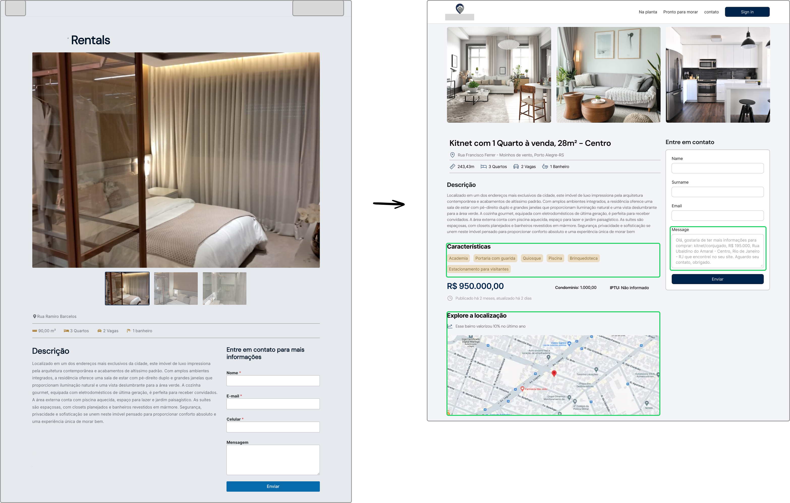

YEAR
BRIEFING
Alto Padrão is a responsive web platform designed to bridge the gap between affluent clients and specialized brokers. The platform simplifies high-end property discovery, provides immersive architectural overviews.
Timeline
3 Months
Reducing platform exit points by integrating micro-location data
Alto Padrão is a responsive web platform designed to bridge the gap between affluent clients and specialized brokers. The platform simplifies high-end property discovery, provides immersive architectural overviews.
3 Months
UX/UI Engineer, User Research in collaboration with developers.
Desk research, competitive analysis, heuristic analysis, JTBD, HMW, hypothesis statement, journey map, moodboard.
Current real estate solutions in the market often rely on rigid, generic filtering systems that fail to address the nuanced needs of users. Furthermore, a significant gap in the user journey exists where users are forced to leave the platform to research neighborhood amenities via third-party maps, leading to high drop-off rates. Additionally, communication friction is a major barrier; standard contact forms feel impersonal and disconnected from the Brazilian market's reality, where WhatsApp is the primary tool for business. This project aims to bridge these gaps by creating an integrated, 'concierge-style' digital experience that keeps the user engaged and simplifies the path to conversion.
To understand the current landscape of real estate platforms and identify opportunities for improvement, I conducted comprehensive research. Secondary data were collected and analyzed from sources such as: GOV, Exame, Diário do Comércio, and NMSC.
To understand the current competitors for real estate-focused applications and identify theirs strengths and uncover areas for improvement, I conducted a competitor analysis covering three direct and two indirect competitors.

How might we transform the fragmented property search into a seamless, data-rich discovery journey that reduces platform exit rates and leverages a context-aware WhatsApp bridge to increase qualified lead generation?
Understanding users tasks or “jobs” with a product reveals drivers of behaviors, aiding in effective product design for enhanced satisfaction and successes.
"When I am searching for a property, I want to filter by specific attributes and lifestyle amenities, so that I don't waste time scrolling through thousands of irrelevant, mass-market listings."
"When I evaluate a potential home, I want to explore the surrounding premium services and safety data within the same platform, so that I can make a confident decision without the friction of switching between multiple tabs."
"When I find a property that interests me, I want to initiate a direct, context-aware conversation with a specialized broker, so that I can get immediate answers without having to repeat the property details or fill out long, impersonal forms."
We believe that integrating micro-location data and neighborhood insights directly into the property page will eliminate the need for external searches, thereby increasing on-page retention and user trust.
We believe that replacing generic contact forms with a context-aware messaging system will significantly increase the quality of leads by providing brokers with immediate property-specific data.
